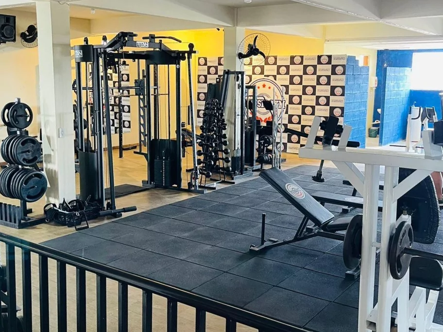

Descubra a Magia da Academia Dance & Training
Localizada no coração da cidade, a Academia Dance & Training é muito mais do que uma academia comum. Com uma variedade de estilos de dança, desde o hip-hop até o balé clássico, e programas de treinamento personalizados, a Dance & Training combina fitness e expressão artística de forma única. Além de fortalecer o corpo, esta academia promove uma comunidade vibrante e inclusiva, onde os membros encontram não apenas exercícios, mas também inspiração e conexões duradouras. Junte-se a nós e descubra o poder transformador da dança na Dance & Training!
Descubra a Magia da Academia Dance & Training
Localizada no coração da cidade, a Academia Dance & Training é muito mais do que uma academia comum. Com uma variedade de estilos de dança, desde o hip-hop até o balé clássico, e programas de treinamento personalizados, a Dance & Training combina fitness e expressão artística de forma única. Além de fortalecer o corpo, esta academia promove uma comunidade vibrante e inclusiva, onde os membros encontram não apenas exercícios, mas também inspiração e conexões duradouras.

Explorando a Dança e a Comunidade na Dance & Training
Os instrutores altamente qualificados da Dance & Training não apenas ensinam técnicas de dança de maneira envolvente, mas também incentivam os dançarinos a explorarem novos horizontes de criatividade e autoexpressão. Cada aula é uma jornada de descoberta pessoal, onde o movimento se torna uma linguagem universal que transcende as barreiras físicas e emocionais. Com eventos sociais regulares, workshops estimulantes e um ambiente acolhedor, a Dance & Training é o lugar ideal para aqueles que desejam não apenas melhorar sua forma física, mas também se conectar com uma comunidade apaixonada pela arte da dança. Venha fazer parte desta experiência única e deixe-se envolver pela magia da Dance & Training!